PERCEIVING · 信息获取
我怎样接收和理解信息？
感觉 S 感知事物的具体属性、现实状态与感官体验；直觉 N 感知潜在联系、意义与发展可能性。
人的心理活动包含感知信息、理解经验，以及基于信息形成判断的过程。荣格八维提供了一套描述这些心理活动的理论语言，帮助我们观察自己如何认识世界、组织信息和作出选择。
4 种心理功能（S / N / T / F） × 2 种心理态度（e / i）＝ 8 种心理功能
这一框架源于荣格的《心理类型》，并影响了后续 MBTI 类型理论的发展。理解八维，可以先认识感知与判断，再理解内倾与外倾，最后观察功能之间如何配合。同一种类型的人，也会因经历、环境及功能发展而呈现不同的样子。
荣格将四种基本功能分为感知与判断两类：前者让信息进入意识，后者依据逻辑或价值标准形成评价。
感觉 S 感知事物的具体属性、现实状态与感官体验；直觉 N 感知潜在联系、意义与发展可能性。
思维 T 依据概念、因果与逻辑原则形成判断；情感 F 依据价值标准评价事物的重要性与认同程度。情感在这里指价值判断功能。
内外倾描述心理活动的主要参照方向，不能只用社交是否活跃来判断。
以外部对象、客观情境与社会环境作为重要参照，关注对象的特征、现实变化，以及环境提供的信息与判断依据。
以主体内部的经验、意象或判断标准作为重要参照，关注外部信息在个人心理经验中呈现的形式与意义。
小写 e / i 表示功能的心理态度，如 Se、Si；MBTI 类型代码使用大写 E / I。每种基本功能都可以分别以内倾或外倾方式表现。
按感觉、直觉、思维、情感四组阅读。每组共享基本功能，差别在于主要参照外部对象，还是内部经验。图示帮助理解，具体含义以文字说明为准。
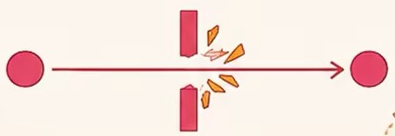
核心问题：外部世界此刻呈现了什么？
认知方式：直接关注外部环境的感官刺激、物理属性与具体变化，通过视觉、听觉、触觉等信息持续更新对当前情境的感知。
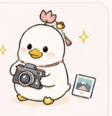
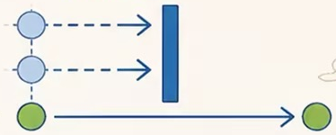
核心问题：当前感官体验在我的内部经验中呈现出什么？
认知方式：关注外部刺激在内部形成的主观感官体验，并将当前知觉与既有感官印象联系起来，体会其中的熟悉感、差异感与个人意义。
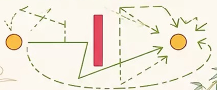
核心问题：当前事物还可能产生哪些新的联系与发展方向？
认知方式：从外部事物、概念和情境中识别尚未显现的联系；一个线索引发多个设想，不同设想又连接出新的可能性。
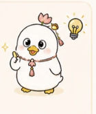
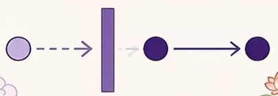
核心问题：这些信息在更深层次上呈现出怎样的模式与意义？
认知方式：以内部意象、象征与潜在关联组织经验，逐渐形成对主题、深层模式或发展方向的整体理解；形成过程有时难以逐步描述。
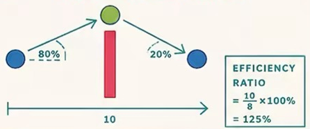
核心问题：依据外部事实与客观标准，什么判断或方法能够成立？
认知方式：依据可观察事实、明确标准与现实条件组织判断，通过程序、分类和评价体系，梳理目标、资源、流程与结果的关系。
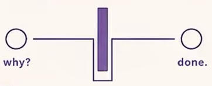
核心问题：这一概念或判断在内部逻辑上如何成立？
认知方式：通过概念分析、关系辨析与逻辑推演建立理解模型，澄清定义和前提，并检验推理及结论之间是否一致。
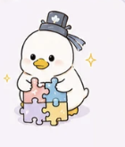
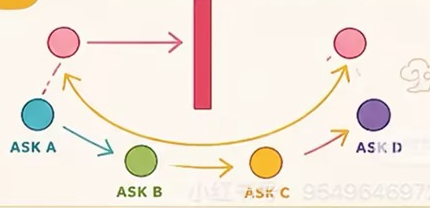
核心问题：这一事物在当前关系与共同价值中具有怎样的意义？
认知方式：理解人际关系、社会规范与群体共享的价值期待，评价行为在具体关系中的适宜性，并协调不同人的需求与表达。
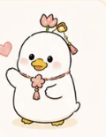
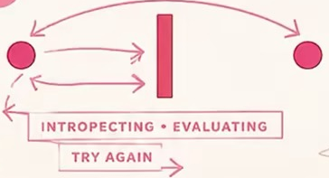
核心问题：这一事物与我的内在价值标准具有怎样的关系？
认知方式：依据内部形成的价值尺度评价事物，通过细致的情感区分与个人信念，确定什么具有重要意义、值得认同和坚持。
Se 主要参照外部对象的实际感官属性；Si 主要参照刺激在内部形成的感官印象。两者体现现实感知的不同取向。
Ne 关注外部事物中的潜在可能性；Ni 关注内部意象联系与深层意义。“发散与整合”是帮助理解的概括。
Te 主要参照外部事实与可共享的逻辑标准；Ti 主要参照内部概念结构与逻辑一致性。两者都使用逻辑判断。
Fe 主要参照外部关系与共同价值；Fi 主要参照内部价值体系与个人认同。两者都参与价值评价。
布里格斯与迈尔斯在荣格理论基础上发展了 MBTI。E / I、S / N、T / F、J / P 四组偏好的组合形成 16 种类型；现代类型动力学再以功能栈描述各类型的功能组织关系。
以下采用常见四功能模型，从左到右为主导、辅助、第三与劣势。不同研究者对第三功能及非偏好功能的解释可能存在差异。
| 类型 | 主导 | 辅助 | 第三 | 劣势 |
|---|---|---|---|---|
| ISTJ | Si | Te | Fi | Ne |
| ISFJ | Si | Fe | Ti | Ne |
| ESTJ | Te | Si | Ne | Fi |
| ESFJ | Fe | Si | Ne | Ti |
| 类型 | 主导 | 辅助 | 第三 | 劣势 |
|---|---|---|---|---|
| ISTP | Ti | Se | Ni | Fe |
| ISFP | Fi | Se | Ni | Te |
| ESTP | Se | Ti | Fe | Ni |
| ESFP | Se | Fi | Te | Ni |
| 类型 | 主导 | 辅助 | 第三 | 劣势 |
|---|---|---|---|---|
| INFJ | Ni | Fe | Ti | Se |
| INFP | Fi | Ne | Si | Te |
| ENFJ | Fe | Ni | Se | Ti |
| ENFP | Ne | Fi | Te | Si |
| 类型 | 主导 | 辅助 | 第三 | 劣势 |
|---|---|---|---|---|
| INTJ | Ni | Te | Fi | Se |
| INTP | Ti | Ne | Si | Fe |
| ENTJ | Te | Ni | Se | Fi |
| ENTP | Ne | Ti | Fe | Si |
以下说明各功能在模型中的角色，不表示每次思考都会依次经过四个步骤。